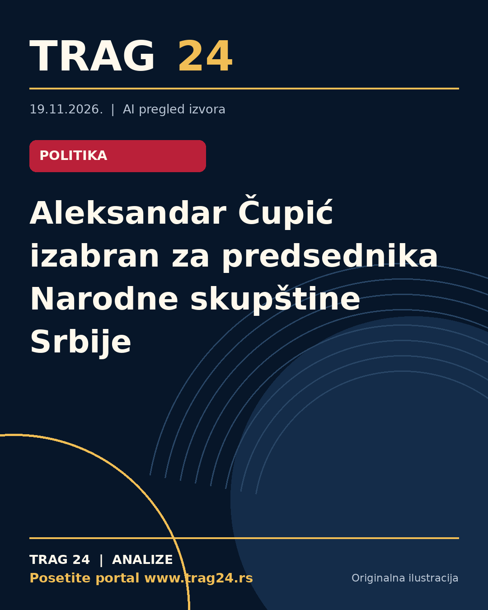

Aleksandar Čupić izabran za predsednika Narodne skupštine Srbije

ŠTA SE DOGODILO
Aleksandar Čupić, docent sa Saobraćajnog fakulteta Univerziteta u Beogradu, izabran je za predsednika Narodne skupštine Srbije. Čupić je kandidat Studentske liste, koja je osvojila apsolutnu većinu u parlamentu, i dobio je podršku većine narodnih poslanika na konstitutivnoj sednici novog saziva Skupštine.
HRONOLOGIJA
Čupićev poslanički mandat potvrđen je 17. novembra 2023. godine, kada je konstituisan novi saziv Narodne skupštine. Na vanrednim parlamentarnim izborima 25. oktobra Studentska lista osvojila je 140 poslaničkih mandata i predložila ga za predsednika parlamenta. Nakon izbora, Čupić je održao i prvo obraćanje sa te funkcije, iznoseći planove o radu skupštine i odnosu prema poslanicima.
ŠTA NAVODE IZVORI
Izvori ističu da je Čupić iz Prokuplja, aktivan u akademskoj zajednici kao docent i naučni radnik u oblasti poštanskog saobraćaja i logistike. Dugi niz godina uključivan je u studentske pokrete i bio je poznat po podršci studentima tokom protesta. Politički ga predstavlja Studentska lista, koja zastupa ideju depolitizacije institucija i veću ulogu stručnjaka u zakonodavnom procesu. Njegove porodične vrednosti i angažman u organskoj poljoprivredi takođe su deo predstavljanja javnosti. Predlagači kandidature naglašavaju njegov akademski integritet i posvećenost opštem dobru. Sa druge strane, predsednik Aleksandar Vučić izneo je sumnje u vezi sa Čupićevom imovinom, što je Čupić odbacio i najavio da će podneti izveštaj Agenciji za sprečavanje korupcije.
ŠTA JE POTVRĐENO
Potvrđeno je da je Čupić izabran za predsednika Narodne skupštine sa podrškom 140 narodnih poslanika, da poseduje doktorat sa Saobraćajnog fakulteta i da je akademski radnik u oblasti poštanskog saobraćaja i logistike. Takođe je potvrđeno njegovo poreklo iz Prokuplja, njegovo uključivanje u studentske proteste i da vodi porodično poljoprivredno gazdinstvo sa suprugom i šestoro dece. Javne informacije o pokretanju postupka Agencije za sprečavanje korupcije u vezi sa njegovom imovinom nisu nezavisno potvrđene u detalje.
ŠTA NIJE POTVRĐENO
Nije potvrđena tvrdnja o posedovanju sedam stanova u Beogradu na Čupićevo ime, niti detalji o bilo kakvoj istrazi ili eventualnim nepravilnostima u vezi sa njegovom imovinom. Takođe, nisu poznati detalji o tome kako će u praksi izgledati predložene promene u funkcionisanju Skupštine pod njegovim predsedavanjem.
ŠTA OSTАJE OTVORENO: Ostaje da se vidi kako će Aleksandar Čupić upravljati Narodnom skupštinom u praksi, posebno u pogledu najavljenog vraćanja dostojanstva parlamentu i depolitizacije institucija. Takođe, pitanje imovine i svih eventualnih pravnih ili institucionalnih provera ostaje otvoreno za dalju proveru nadležnih organa. Otvoreno je i kako će Studentska lista i novi saziv parlamenta uspeti da održe stabilnost i sprovedu promene koje najavljuju.
Izvori
- https://n1info.rs/najave-emisija/novi-dan-novi-predsednik-nove-skupstine/
- https://www.juznevesti.com/drustvo/aleksandar-cupic-iz-prokuplja-novi-predsednik-narodne-skupstine-srbije/
- https://insajder.net/teme/ako-ne-ucestvujete-u-politici-neko-ce-odlucivati-u-vase-ime-ko-je-novi-predsednik-skupstine-aleksandar-cupic
Ova analiza je pripremljena uz pomoć veštačke inteligencije na osnovu javno dostupnih izvora. Navodi izvora nisu nužno nezavisno potvrđeni.